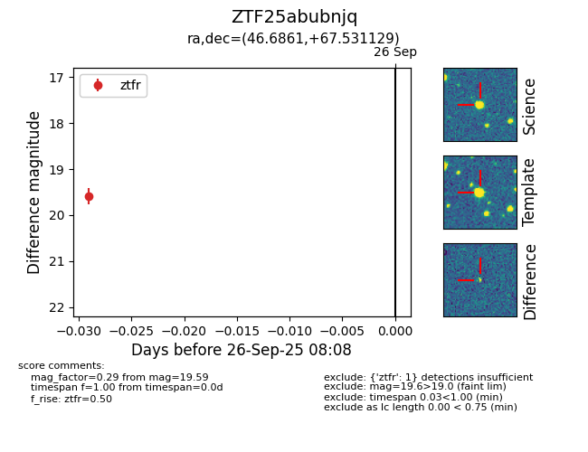

FINK: ZTF25abubnjq
Lasair: ZTF25abubnjq
ALeRCE: ZTF25abubnjq
ZTF25abubnjq (ztf,fink)
equatorial (ra, dec) = (46.6861,+67.53113)
galactic (l, b) = (135.3377,+7.97890)

last ztfr=19.59
1 ztfr detections